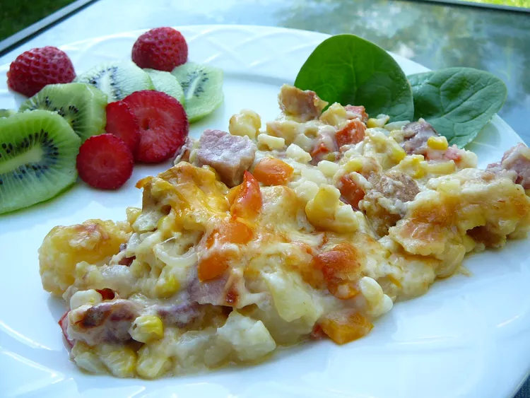

Pork Casserole

Description
Hearty pork casserole is a comforting and satisfying dish made with tender pieces of pork and a mixture of vegetables, all cooked together in a flavorful broth.
It is typically baked in the oven in a casserole dish, allowing the flavors to meld and the pork to become incredibly tender. The casserole may include a variety of vegetables such as carrots, potatoes, onions, and bell peppers, as well as herbs and spices for added flavor.
It is a great meal to make on a cold day, and it can be served with a side of crusty bread or over a bed of rice or pasta.
Overall, hearty pork casserole is a delicious and nourishing meal that is sure to satisfy the whole family.
Ingredients
- potatos
- cooked pork
- canned corn
- minced parseley
- butter
- onion
- flour
- milk
- black pepper
- shredded cheese
Steps
- Preheat oven to 350 degrees F (175 degrees C).
- Bring a large pot of salted water to a boil. Add potatoes and cook until tender but still firm, about 15 minutes. Drain and cool.
- Combine potatoes, ham, corn and parsley; set aside. In a saucepan saute onion in butter for 2 minutes, stir in flour until blended well. Gradually add milk and pepper. Bring to a boil. Cook and stir for 2 minutes. Remove from heat and pour over the ham mixture. Stir to mix well.
- Pour into greased 11x7 baking dish. Cover and bake for 25 minutes. Uncover, sprinkle with cheese and bake 5 to 10 minutes longer until cheese melts.